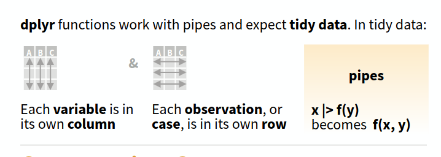
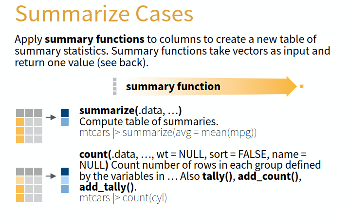
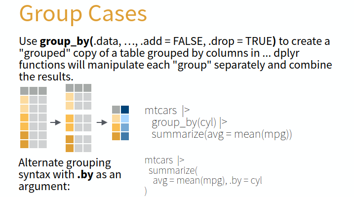
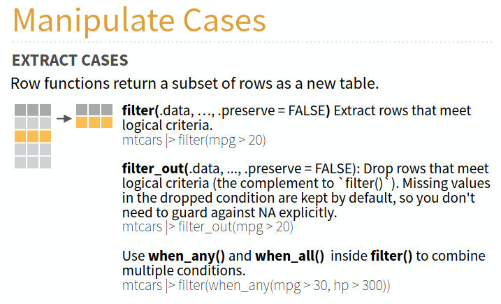
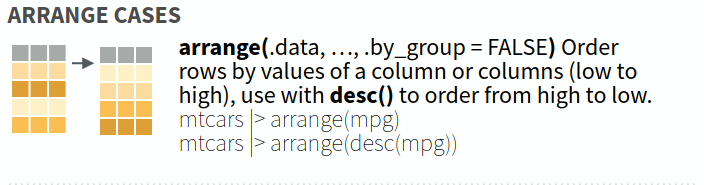
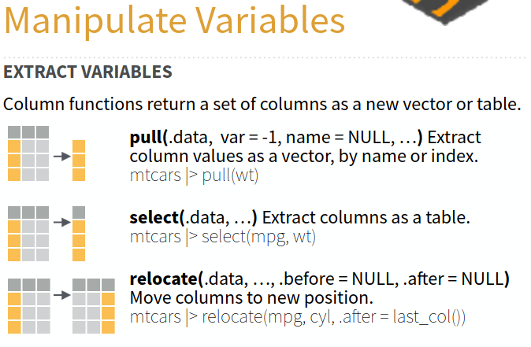
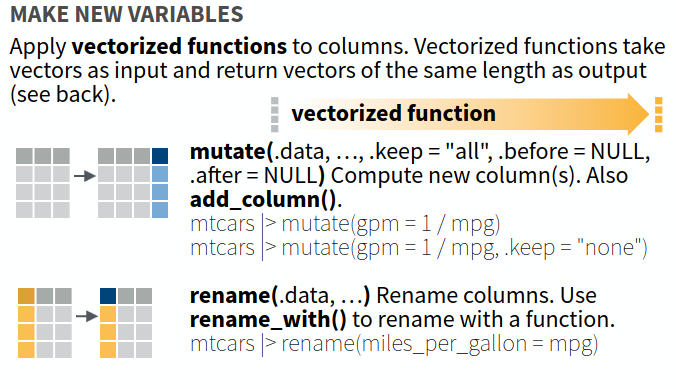
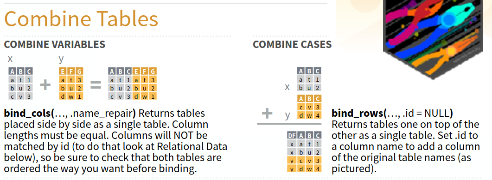
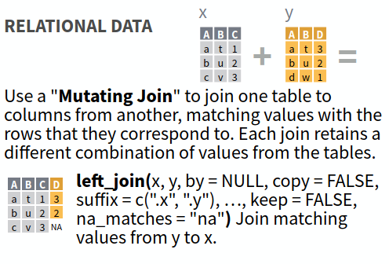

Lab 03: Verbos principales para manipulacion de datos
Actividad
- Nos dividimos en grupos de 5 personas.
- Cada grupo tiene un experto para los distinctos aspectos:
- caracteristicas de los datos tidy y la manipulación con pipelines
- operaciones a nivel de tabela
- operaciones a nivel de fila
- operaciones a nivel de columna
- uniendo datos
- El experto, estudia el material sobre su enfoque específico.
- Los expertos de cada enfoque se reúnen en grupos para compartir sus conocimientos.
- Aclaran dudas entre expertos, toman notas y se preparan para enseñar a su grupo original.
- El experto prepara un reporte breve de:
- ¿Qué hace esta operación?
- ¿Qué cambia: las filas, las columnas, los valores, o el número de observaciones?
- Dé un ejemplo ecológico de cuándo la usaría. De la experiencia reciente con el analisis de datos en su grupo, mencione un caso concreto.
- Cada experto regresa a su grupo original y enseña a los demás miembros del grupo sobre su área específica.
- Se discuten y resuelven dudas sobre las temas presentados por los expertos.
- Se comparten conclusiones y se resuelven dudas finales con toda la clase.
- Cada grupo original (no grupo de expertos) tiene que resolver la situación de la siguiente página (caja roja).
Cada grupo original (no grupo de expertos) tiene que resolver la siguiente situación:
Tenemos una tabla llamada muestras con la abundancia (conteo) de macroinvertebrados de 4 sitios, medida en varias fechas; cada muestra cubre un área fija de 0.25 m².
| sitio | fecha | conteo |
|---|
Tenemos una segunda tabla llamada sitios, con un solo valor de temperatura y oxígeno por cada uno de los 4 sitios (estos valores no varían por fecha).
| sitio | temperatura | oxígeno |
|---|
Queremos, a partir de la tabla muestras:
- quedarnos solamente con las muestras de septiembre (columna
fecha); - agregar una columna de densidad (individuos/m²), dividiendo el conteo entre el área de la muestra;
- calcular la densidad promedio de septiembre por sitio;
- ordenar los sitios de mayor a menor densidad promedio;
- agregar, para cada sitio, la temperatura y oxígeno desde la tabla sitios.
¿Qué operaciones necesitamos y en qué orden? ¿Con qué columna(s) se debe hacer la unión (join) entre las dos tablas?
Material
En lo que sigue se presentan las principales funciones de manipulación de datos en R utilizando el enfoque tidy data. Todos los imagenes provienen del dplyr cheatsheet disponible en el siguiente enlace: dplyr cheatsheet.
Tidy data (Datos ordenados) (experto 1)
Datos tidy:
- Cada columna representa una variable.
- Cada fila representa una observación.

Pipelines, el operador |> o %>%:
- Facilitan la manipulación de datos tidy.
- Toman la salida de una operación y la pasan como entrada a la siguiente operación
- Esto permite encadenar múltiples transformaciones de manera clara y concisa.
datos |> filter(variable > valor) |> summarise(promedio = mean(variable))Operaciones a nivel de tabela (experto 2)
Resumenes
summarise():
- Aplica una funcion para generar nueva tabela con resúmenes.
- Permite obtener estadísticas descriptivas.
- Se utiliza comúnmente junto con
group_by()para obtener resúmenes por grupo.
datos |> summarise(promedio = mean(variable))
Agrupamiento
group_by():
- Agrupa los datos según una o más variables.
- Crea version modificada de los datos con el agrupamiento aplicado.
- Todos operaciones posteriores se aplican dentro de cada grupo.
- Se utiliza comúnmente junto con
summarise()para obtener resúmenes por grupo.
datos |> group_by(variable_categorica)
Operaciones a nivel de fila (experto 3)
Filtrado (selección de filas)
filter():
- Selecciona filas que cumplen con una condición específica.
- Permite filtrar los datos según valores de las columnas.
- Se utiliza comúnmente para enfocarse en subconjuntos relevantes de los datos.
datos |> filter(variable > valor)
Ordenamiento de filas
arrange():
- Ordena las filas de un data frame según una o más columnas.
- Permite especificar el orden ascendente o descendente.
- Facilita la visualización y el análisis de los datos en un orden específico.
datos |> arrange(variable)
Operaciones a nivel de columna (experto 4)
Selección de columnas
select():
- Permite elegir un subconjunto de columnas de un data frame.
- Facilita trabajar solo con las columnas relevantes.
- Se puede usar para reordenar columnas o renombrarlas.
datos |> select(columna1, columna2)
Creando nuevas columnas
mutate():
- Crea nuevas columnas o modifica las existentes.
- Permite realizar cálculos basados en otras columnas.
- Se utiliza comúnmente para agregar información derivada a los datos.
datos |> mutate(nueva_columna = variable1 + variable2)
Uniendo datos (experto 5)
Uniendo datos sin claves
bind_rows():
- Permite combinar varias tablas con las mismas columnas.
bind_rows(tabla1, tabla2)
Uniendo datos con claves
left_join():
- Permite combinar dos tablas según una clave común, conservando todas las filas de la tabla izquierda.
- Se utiliza comúnmente para agregar información adicional a un conjunto de datos existente.
- No conserva las filas de la tabla derecha que no tienen coincidencias en la tabla izquierda.
left_join(tabla1, tabla2, by = "clave")
Hay otros tipos de uniones con claves, como
right_join(),inner_join()yfull_join(), que permiten combinar tablas de diferentes maneras según las necesidades del análisis.